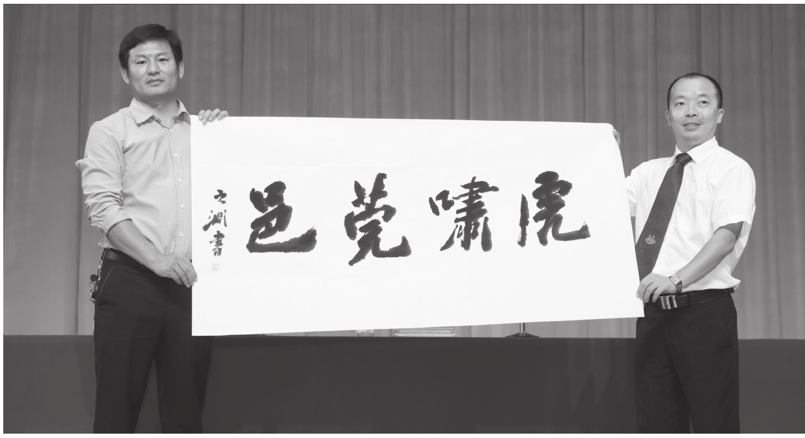
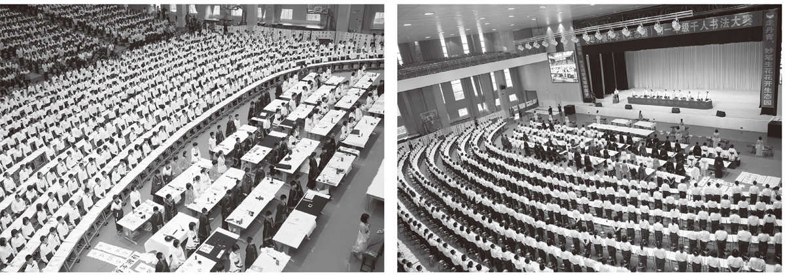

尊敬的各位领导、各位来宾，亲爱的老师们、同学们：
大家下午好！
丹青吐彩歌盛世，翰墨飘香谱华章。在这秋高气爽的美好季节，我们在这里隆重举行学生千人书法大赛。群贤雅集，翰墨飘香。我们有幸邀请到了书法艺术家梁一川先生、黄飞虎先生、贺可为先生、张鹏飞先生等出席我们的活动。在此，我谨代表学校向莅临本次活动的书法艺术大家表示热烈的欢迎和衷心的感谢！
汉字和汉字文化以其特别的外在形态、丰富的深刻内涵，在世界语林享有盛誉。它作为传承中华文明、传播中国文化的重要载体，是中华民族传统文化的瑰宝，是我们祖先智慧的结晶，是维系华夏儿女情感与血脉的重要纽带，是我们中华民族的骄傲和自豪，这是我们的文化自信。
汉字是世界上流传时间最久远的文字，从甲骨文到今天的简体汉字，历经四千多年。在这四千多年里，我们智慧而富有创造精神的祖先从书写中发现了汉字的美，于是在文字上面进行艺术创造，从而形成了一门雅俗共赏的艺术——书法。
中国书法历史悠久、形式多样、传播盛广、源远流长。春秋时期的《礼记》所述的“六艺”（礼、乐、射、御、书、数），书法就位列其中。书法艺术经过几千年来的发展变化、不断提升、慢慢沉淀，凝结了中华民族的聪明智慧和不朽的创造精神，被誉为中国古代“四大发明”之外的又一大伟大发明。它集实用与欣赏于一体，饱含人生智慧和处世哲学，内涵博大精深、令人回味，诉说着美丽佳话，陶冶着我们的情操。
书法作品里都是书法家们思想和智慧的体现，固有“书品即人品”的说法。我们古代书法家中，怀素坚忍不拔的意志品格、王羲之勤勉严谨的治学精神、郑板桥爱民如子的道德情操、海瑞为民请命的高尚风骨、林则徐抗争外辱的不屈斗志，都可以从他们的书法作品中彰显和品读。我们要把历代书法名家的崇高品德，当作一面镜子，“以古人为镜”，鞭策自己以德治书、以德治学、以德为人、以德处事。因此，我们应从现在做起，以书法练习为契机，树立文化自信，弘扬文化自信，做中华传统文化的保护者、继承者、发扬者，做一个儒雅高洁、身正有德的中国人。

书法家张鹏飞向作者惠赠“虎啸莞邑”
同学们，学习书法、观摩书法还能促进我们思维发展，“静以养心、静以修身、静以养德”，修习书法就是静心养性，培养耐力和能力，提升艺术修养。一直以来，我们学校坚持“体艺是最顶层的教育”这一主体思路，在艺术教育特别是书法艺术教育方面，做了许多的工作，取得了一定的成绩，广东省教育厅授予了我校“广东省中小学艺术教育特色学校”荣誉称号。我们长期举办书法专业讲座、开展硬笔（软笔）书法比赛、开设书法校本课程、聘请书法课程专家讲学。在课程的建设方面，我们每个班级每周开设了一节书法课、习字课，每天午练时间坚持的20分钟练字，每次单元月测加设的书法等级考试等，都是为了让书法进课堂，提升同学们的书写水平和书法素养。我们将以国家《关于加强九年义务教育阶段中小学生写字教学的指导纲要》为指导，以语文教学改革为抓手，落实学生学科核心素养，以书法教学改革为新特色，开设书法艺术课，书写规范方块字，推动建设学校的特色特长课程，全面推进我校的素质教育工作，为培养具有创新精神、实践能力、高尚人格的未来人才打下坚实的文化基础、艺术根基、人文修养。我们将以本次“千人书法展演”为契机，在诸位书法家和课程专家的引领、帮助、指导下积极开展工作，努力营造传承国粹、书法习字的文化氛围，陶冶情操，历练品格，让师生们乐于练字，让师生写好汉字。我们要进一步优化书法习练环境、健全等级评定机制，让师生们勤于练字，多元评价、百花齐放；我们还要提升书法教育教学科研水平，争取有相关课题立项和成果面世，提高书法教育的科学性、理论性。我们希望通过书法艺术特色教育体系的打造，让孩子们明白一个道理：写方方正正规范字，做堂堂正正中国人。
老师们、同学们，书法艺术蕴涵着中国传统文化的精髓，是中国的国粹，不仅浸透着厚重的历史积淀，而且承载着中国文化的审美意趣，蕴涵着蓬勃的时代精神。让我们期待今天这次活动，一方面，进一步推动我校书法艺术教育工作，使书法艺术在我校能发扬光大，另一方面是希望通过本次活动，让更多的同学热爱书法，学习书法，发掘更多爱好书法艺术的苗子，不断壮大我校的书法队伍，以提高我校书法在社会上的影响力。愿我们在场参演的全体师生，琴棋书画修涵养，笔墨纸砚展风流；硬笔软笔齐上阵，楷书行书竞风流；行楷隶篆见功夫，书法艺术耀长空！
最后，预祝这次书法大赛圆满成功！

千人书法展演现场